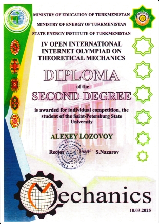
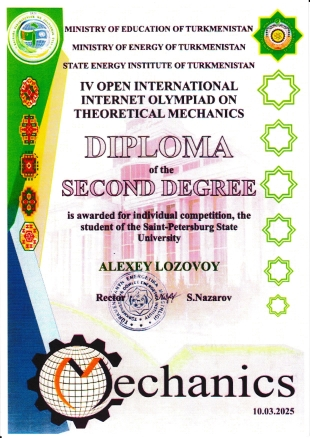

News
M.A. Klyushin - winner of the Saint Petersburg Government Scholarship 2024 programm,
The Committee on Science and Higher Education summed up the results of the competition for scholarships from the Government of St. Petersburg in the 2024-2025 academic year.
In accordance with the decision of the Competition Committee, Klyushin Maxim Alexandrovich have been
awarded nominal scholarships by the Government of St. Petersburg on the basis of the order of the
Committee on Science and Higher Education dated 2024/10/24 No. 198.
The Government of St. Petersburg scholarships competitions results
M.A. Klyushin got scholarship named after Professor N.F. Morozov,
In December 2024, a competition was held for the scholarship named after Professor N. F. Morozov in the 2024-2025 academic year. Following the meeting, the commission compiled a ranked list of applicants recommended for a nominal scholarship.
In the 2024-2025 academic year, one scholarship named after N. F. Morozov was established and it was awarded to Maxim Alexandrovich Klyushin based on the results of the competition.
The project team wishes Maxim Alexandrovich further victories and productive work.
About
the results of the competition for the N. F. Morozov scholarship
M.A. Klyushin - winner of the Potanin Foundation 2024/2025 scholarship program
Maxim Klyushin is the winner of the 2024/2025 Potanin Foundation Scholarship program. Maxim Alexandrovich Klyushin, a second-year masters course student at St. Petersburg State University, became one of the winners of the Vladimir Potanin Charitable Foundation scholarship competition. Maxim is studying in the field of Mechanics and Mathematical Modeling (Studying program code: 01.04.03) and was selected among 3654 participants based on the results of a multi-stage examination.
In the 2024/2025 academic year, 750 students from 68 Russian universities became scholarship holders. Special attention in the competition was paid to the analysis of the use of artificial intelligence: 23% of the winners used AI tools when preparing applications, mainly for text editing.
St. Petersburg State University entered the top 5 universities in terms of the number of scholarship holders (40 winners). Additional information and a complete list of results are available on the website of the Potanin Foundation.
the Potanin Foundation website.
St. Petersburg State University teams performed at the IV Open International Internet Olympiad with high results
On March 10-15, the IV Open International Internet Olympiad in the discipline "Theoretical Mechanics" was held, organized by the State Energy Institute of Turkmenistan. More than 700 students from 17 countries, such as Russia, China, Turkmenistan, Uzbekistan, Tajikistan, Saudi Arabia, Turkey, Afghanistan, Kyrgyzstan, Germany, Indonesia, USA, Belarus, Malaysia, Romania, Hungary, Iran took part in the tournament. No more than 10 students from each university could participate in an individual round, and 1 or 2 teams of up to 5 students could participate in team competitions.
St. Petersburg State University, Faculty of Mathematics and Mechanics was represented by two teams of students:
Maxim Klyushin (Captain), 2nd year Master's Degree, Department of Theoretical and Applied
Mechanics
Batalov Semyon, 2nd year Master's degree, Department of Hydroaeromechanics
Danil Bystrov, 5th year Specialist, Department of Mathematics
Artem Chuikov, 4th year student
Alexander Plakhotnikov, 1st year student
Alexey Lozovoy (Captain), 3rd year, Department of Theoretical and Applied Mechanics
Cherenkov Alexander, 5th year specialist, Department of Elasticity Theory
Li Peize, 3rd year specialist
Glazyrin Alexey,
Samokhin Pavel,
According to the results of the Olympiad:
Klyushin's team took the first place in team competition!
Maxim Klyushin took 3rd place in the individual competition!
Alexey Lozovoy took the 2nd place in the individual competition!
 

Congratulations to all participants with a great performance!